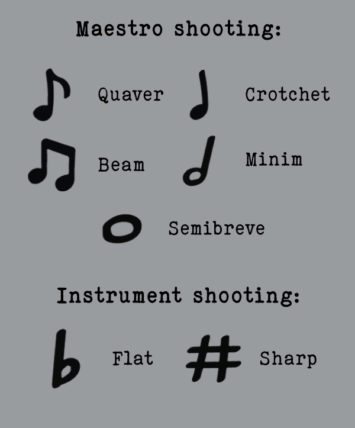
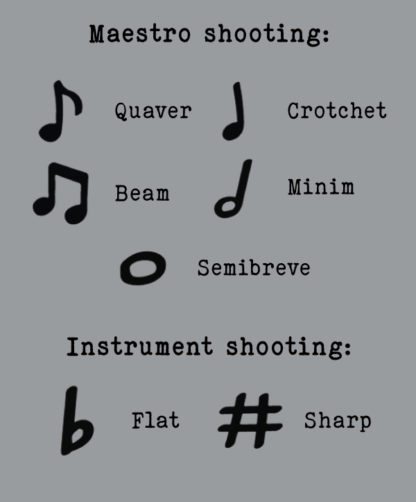

← Back
Maestro Shooter
Characteristics:
2D, Arcade, Rhythm Action, Shooter
Main tools:
Unity 2D, Adobe Illustrator/Premiere, Avid Sibelius, OBS Studio
Overview
Maestro shooter is a space shoo ter genre game. The initial idea was to follow the same art style and dynamics of a space shooter: dark background, spaceships on both sides (player and enemies), and a futuristic approach to the game overall feel.
To make this project feel like my own, I made use of the game's core mechanics but with a different theme: music. In this version, the player will be a maestro, conducting (shooting) notes at instruments while trying to avoid their “mistakes”, a.k.a. being out of tune, either playing a higher note than they are supposed to (sharp) or a lower one (flat).
Concept
As a simple space shooter genre game, the main idea for the player is to avoid waves of enemies for as long as possible. The game itself consists of a single level with endless enemy waves, enemies which are spawned in waves and follow a set of predisposed paths. The player will shoot enemies to score points while avoiding to collide with them or their projectiles until the maestro1s health points reaches zero and the game is over. The difficulty will be raised as the game goes on. Core gameplay is easy to learn, but hard to master; the game is supposed to feel increasingly frantic from a player's perspective.
Game Loop
Mainly, the game consists of three screens:
- Main menu screen
- Game scene
- Game over scene, which displays the score and the option to play again or to go back to main menu
Feature Analysis
Core gameplay:
- Player movement
- Player health
- Shooting
- Enemy health
- Enemy movement -> enemy waves, through a wave system
Fun-to-play features:
- Health slider
- Scoring system
- Increased difficulty
- Sound effects: notes, damage, and before and after sounds for each round - it is a music-themed game after all!
- Special slider: Special bar that loads with time, adding a small advantage so the player can stay alive longer (hard to master)
Polish:
- Visual effects
- Menus/Screens
- Content (additional waves, additional enemies)
- Tuning
Art Direction
 

Environment:
Thinking of live music, especially classical music, suggests the idea of an older setup - being inside an older building, wooden details, well-dressed bandmates, a well-dressed maestro, and an overall sense of “fanciness”. As a 2D game with only one main screen where the game takes place, it was important to reflect the feeling of being in an old theater as if listening to a symphony or an opera.
Colors:
To reflect the environment, the art style chosen for the game screens reflects wooden structures, pastel-ish colors, yellowed and teared down paper, while having enough contrast to make the main features stand out, as to not distract the player from the game itself.
Visuals:
The maestro, the notes (projectiles), and enemies (instruments) stand out from the rest with more vivid colors. The player “ship” (maestro), the enemy ships (instruments), the projectiles (notes), UI sprites, and health and special bar were created using Adobe Illustrator. Animations were created with Unity 2D's animation system.
Music/Sound Effects:
Being a music-driven project, music and sound effects had very important assets to be looked after. To make the game “musically accurate”, I used Avid Sibelius, a music notation software, to create the note sounds to reflect their actual duration in relation to one another, as if read in a music sheet.
The notes that the maestro shoots are true to music notation in relation to themselves, as if they were in the same score. Each note was created separately for each instrument on Sibelius, recorded through OBS, and then edited to the exact duration and best sound quality for the game using Adobe Premiere.
Takeaways
There were several important concepts learned and practiced in this project, including parallax background effects, camera/movement boundaries (screen shake!), pathfinding, Unity/C# level managing, C# singleton scorekeeper. The challenge of creating my own assets was a bit part of the learning as well, understanding the difficulty not only of coming up with something special that players would like, but executing it and having it work in-game.
Besides coding, from an art direction perspective (from drawing assets, creating animations, and tuning particle systems), but also with sound design. Challenging, but extra fun to make.
Now, can you stay in tune? I dare you to try... Play it NOW!